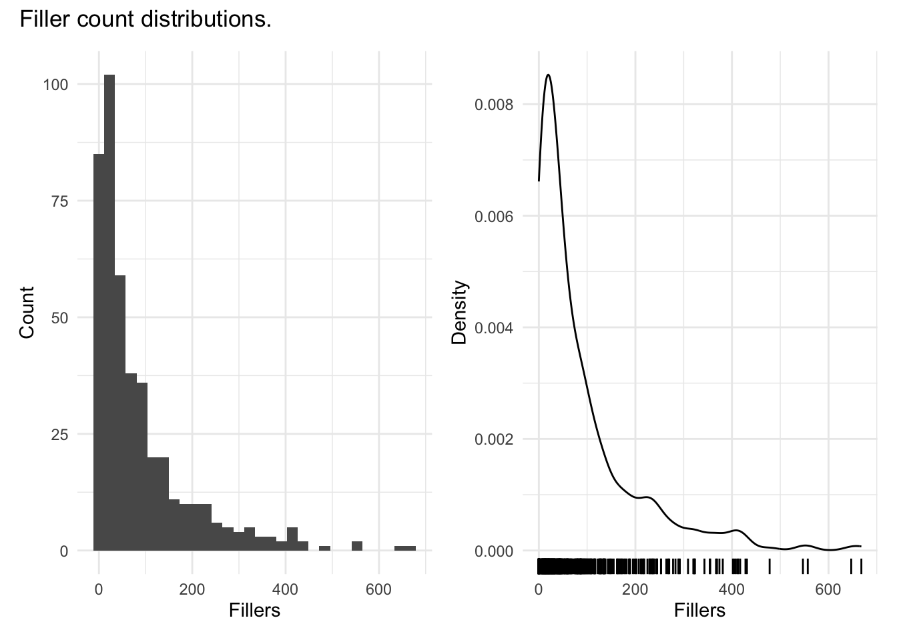
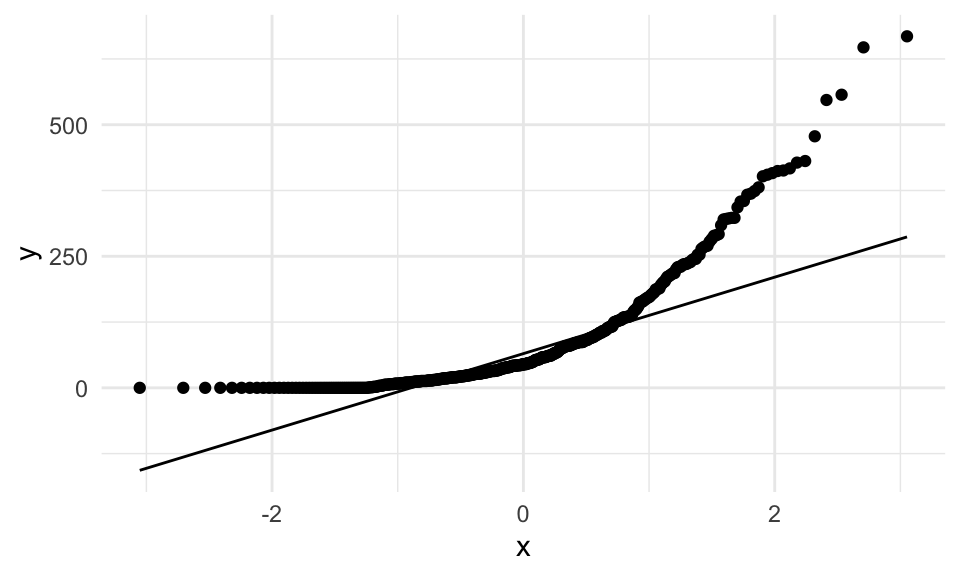
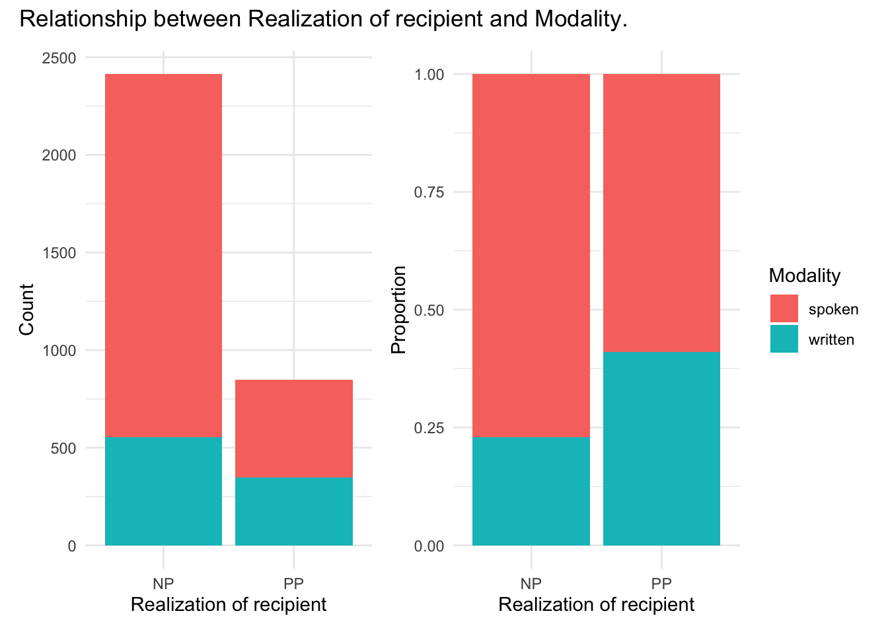
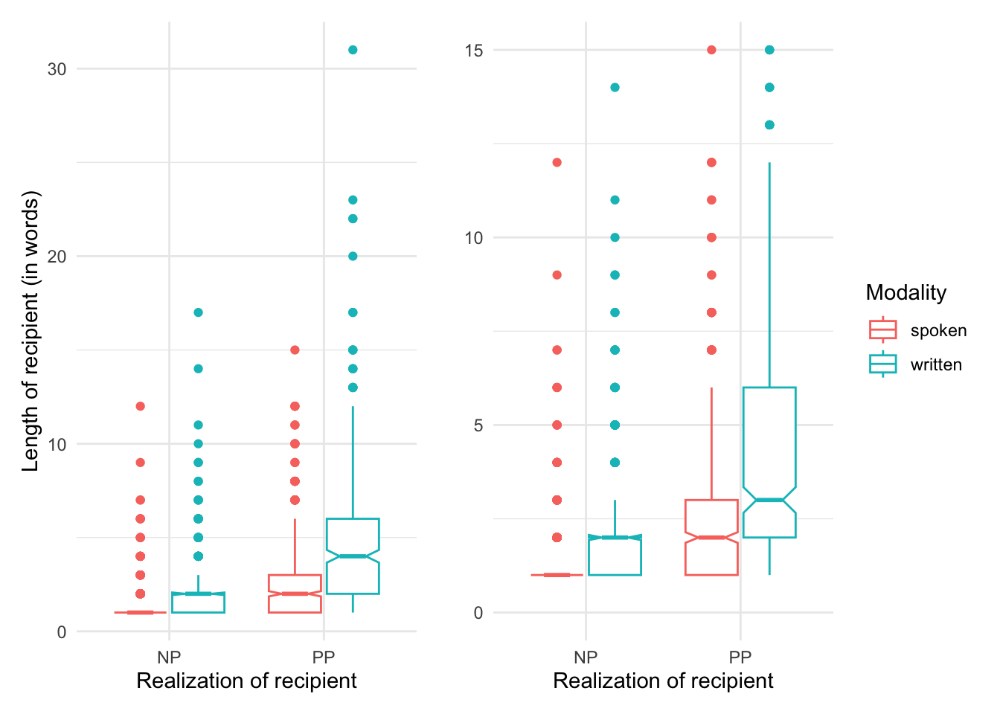
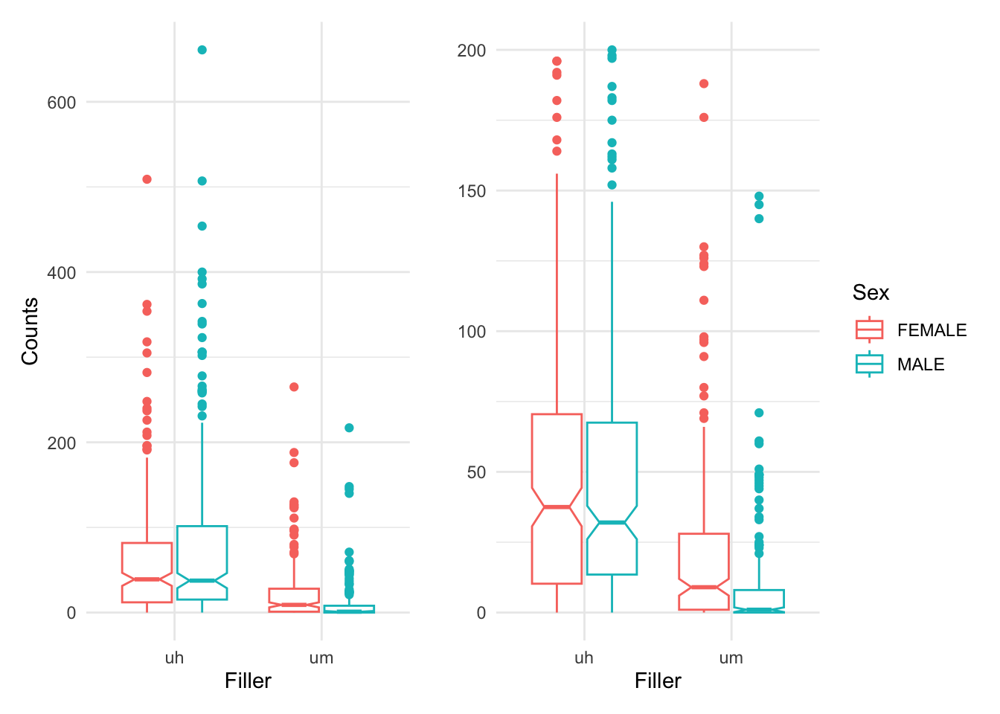

library(infer) # for inferential statistics
# load the `dative` data from the `languageR` package
data(package = "languageR", data = "dative")
# specify the dependent `RealizationOfRecipient` and independent variables `LengthOfTheme` and `AnimacyOfTheme` for a logistic regression model
log_reg <-
dative %>%
specify(RealizationOfRecipient ~ LengthOfTheme + AnimacyOfTheme) %>%
generate(response = "logistic", type = "response") %>%
calculate(stat = "p.value", order = "descending")10 Inference
People generally see what they look for, and hear what they listen for.
— Harper Lee, To Kill a Mockingbird
Keys
- what are the three main types of inferential analysis approaches?
- how does the informational value of the dependent variable relate to the statistical approach adopted?
- how to descriptive, statistical, and evaluative steps work together to produce the reliable results?
In this chapter we consider approaches to deriving knowledge from information which can be generalized to the population from which the data is sampled. This process is known as statistical inference. The discussion here implements descriptive assessments, statistical tests, and model evaluation procedures for a series of contexts which are common in the analysis of corpus-based data. The chapter is structured into three main sections which correspond to the number of variables included in the statistical procedure. Each of these sections includes a subsection dedicated to the informational value of the dependent variable; the variable whose variation is to be explained.
For this discussion two datasets will be used as the base to pose various questions to submit for interrogation. It is of note that the questions in the subsequent sections are posited to highlight various descriptive, statistic, and evaluation procedures and do not reflect the standard approach to hypothesis testing which assumes that the null and alternative hypotheses are developed at the outset of the research project.
The process for each inferential data analysis in this section will include three steps: (1) descriptive assessment, (2) statistical interrogation, and (3) evaluation of the results.
Swirl
What: Significance testing
How: In the R Console pane load swirl, run swirl(), and follow prompts to select the lesson.
Why: To learn how to implement various statistical tests in common significance testing scenarios.
10.1 Orientation
The aim of this section is to provide an overview of inferential data analysis (IDA) and to introduce the three main types of inferential analysis approaches that are most common in text analysis research.
10.1.1 Research goals
The goal of IDA is to detect, explain, and generalize. The relationship to detect is predtermined by the hypothesis. In this situation the researcher will have identified an outcome variable (often known as a dependent variable) and often a predictor or set of predictor variables (independent variables) that are directly linked to the hypothesis in a way that the results of the statistical analysis allows to either confirm that null hypothesis or reject it. Explaining the results of the statistical analysis is key to summarizing the findings and how they relate to the hypothesis. To the extent that the text sample used is representative of the population from which the data is sampled, the results can be generalized to the population. IDA is not an exploratory endeavor and as such that anlysis is performed on the data in a much more conservative manner than is the case in exploratory data analysis (EDA) or predictive data analysis (PDA).
10.1.2 Approaches
- The dependent variable and predictor variables are fixed (tied to hypothesis)
- Descriptive statistics and visualizations (plots or tables) are used to summarize the data and provide a preliminary assessment of the data
- Inferential statistics are used to test the hypothesis
Analysis types
The type of analysis that is performed depends most heavily on the informational value of the dependent variable. The informational value of the dependent variable is determined by the type of data that is collected. Secondly, the number and informational types of the independent variables (predictor variables) also play a role in determining the type of analysis that is performed.
- Categorical dependent variable
- Descriptive statistics
- Frequency
- Proportion
- Confidence intervals
- Inferential statistics
- Chi-square
- Logistic regression
- Descriptive statistics
- Continuous dependent variable
- Descriptive statistics
- Mean
- Standard deviation
- Confidence intervals
- Inferential statistics
- Correlation
- Linear regression
- Descriptive statistics
10.1.3 Workflow
Prerequisites: - A testable hypothesis (covering the outcome space, i.e. null and alternative hypotheses). - A data set that aligns with the population targeted to generalize to. - A operationalized dependent and independent variable(s) that are tied to the hypothesis.
Identify
- Identify the informational value of the dependent and independent variable(s).
- Assess the distribution of the independent and dependent variables with the appropriate descriptive statistics and visualizations.
- Choose an appropriate statistical test based on the informational value and distribution of the dependent and independent variables.
- Apply transformations to the data as needed to meet the assumptions of the statistical tests.
Interrogate
- Apply the appropriate statistical test to the data:
- Categorical dependent variable
- Chi-square (dependent and one independent variable)
- Logistic regression (dependent and one or more independent variables)
- Continuous dependent variable
- Correlation (dependent and one independent variable)
- Linear regression (dependent and one or more independent variables)
- Categorical dependent variable
- Assess the results of the statistical test (p-value, confidence intervals, effect size)
Interpret
Review the results of the statistical test and interpret the results in the context of the hypothesis.
10.2 Analysis
Recap and introduction to the structure of the analysis subsection.
- Categorical dependent variable
- Categorical/ continuous independent variable(s)
- Descriptive assessment
- 0-1 categorical independent variable: Tables summary statistics (contingency table)
- Continuous independent variable(s): Plots and summary statistics (boxplots, histograms, etc.)
- Statistical interrogation
- Chi-square (dependent and one independent variable)
- Logistic regression (dependent and one or more independent variables)
- Evaluation of results
- p-value
- Confidence intervals
- Effect size
- Descriptive assessment
- Categorical/ continuous independent variable(s)
- Continuous dependent variable
- Continuous/ categorical independent variable(s)
- Descriptive assessment
- Tables, plots, and summary statistics
- Statistical interrogation
- Correlation
- Linear regression
- Evaluation of results
- p-value
- Confidence intervals
- Effect size
- Descriptive assessment
- Continuous/ categorical independent variable(s)
10.2.1 Categorical dependent variable
Chi-square
Chi-square tests can be used for frequencies of categorical variables. The chi-square goodness of fit test is used to test whether the observed frequencies of a categorical variable match the expected frequencies of a single variable. The chi-square test of independence is used to test whether the observed frequencies of two categorical variables are independent of each other. For hypothesis tests that include more than two variables, the chi-square test is not appropriate. Instead, logistic regression is used.
Logistic regression
Logistic regression can handle more than one independent variable, and these variables need not be categorical. The dependent variable is a binary variable, and the independent variables can be continuous or categorical. The logistic regression model is used to predict the probability of the dependent variable being 1. The logistic regression model is used to test whether the independent variables are associated with the dependent variable.
Using the infer package, a logistic regression can be performed using the specify() and generate() functions. The specify() function is used to specify the dependent and independent variables. The generate() function is used to generate the model. The calculate() function is used to calculate the p-value and confidence intervals.
10.2.2 Continuous dependent variable
Correlation
Linear regression
10.3 Reporting
10.4 Summary
Activities
Recipe
What: Statistical inference: prep, assess, interrogate, evaluate, and report
How: Read Recipe 9 and participate in the Hypothes.is online social annotation.
Why: To illustrate some common coding strategies for preparing datasets for inferential data analysis, as well as the steps conduct descriptive assessment, statistical interrogation, and evaluation and reporting of results.
Lab
What: Statistical inference: prep, assess, interrogate, evaluate, and report
How: Clone, fork, and complete the steps in Lab 9.
Why: To gain experience working with coding strategies to prepare, assess, interrogate, evaluate, and report results from an inferential data analysis, practice transforming datasets and visualizing relationships, and implement organizational strategies for organizing and reporting results in a reproducible fashion.
Questions
Conceptual questions
- What is the difference between a descriptive and inferential analysis?
- What are the steps involved in conducting a descriptive analysis?
- What are the steps involved in conducting an inferential analysis?
- What are the steps involved in preparing data for inferential analysis?
- What are the steps involved in conducting a statistical interrogation?
- What are the steps involved in evaluating the results of an inferential analysis?
- What are the steps involved in reporting the results of an inferential analysis?
- Would word freqency differences between two groups of words be better assessed using a t-test or a chi-squared distribution?
- Would word lengths between two groups of words be better assessed using a t-test or a chi-squared distribution?
- What type of visualization would be best for exploring the relationship between two categorical variables?
- What type of visualization would be best for exploring the relationship between two non-categorical variables?
- What type of visualization would be best for exploring the relationship between a categorical and a non-categorical variable?
- What is the role of confidence intervals in inferential data analysis? How is this similar or differnt to the role of p-values?
- What is the role of effect size in inferential data analysis? How is this similar or differnt to the role of p-values?
Technical exercises
- Use the lm() function to create a linear model, assess the summary statistics, and evaluate the results.
- Use the glm() function to assess the relationship between two categorical variables and evaluate the results.
- Apply a chi-squared distribution to explore categorical dependent variables and evaluate the results.
- Calculate correlation coefficients between two non-categorical variables and evaluate the results.
- Read in a dataset and transform it to prepare it for inferential analysis.
- Decide which type of visualization is most appropriate for the dataset and then implement it using ggplot2.
- Use the effectsize() function to calculate effect size and confidence intervals.
10.5 Preparation
At this point let’s now get familiar with the datasets and prepare them for analysis. The first dataset to consider is the dative dataset. This dataset can be loaded from the languageR package (R. H. Baayen and Shafaei-Bajestan 2019).
dative <-
languageR::dative |> # load the `dative` dataset
as_tibble() # convert the data frame to a tibble object
glimpse(dative) # preview structure #> Rows: 3,263
#> Columns: 15
#> $ Speaker <fct> NA, NA, NA, NA, NA, NA, NA, NA, NA, NA, NA, NA,…
#> $ Modality <fct> written, written, written, written, written, wr…
#> $ Verb <fct> feed, give, give, give, offer, give, pay, bring…
#> $ SemanticClass <fct> t, a, a, a, c, a, t, a, a, a, a, a, t, a, c, a,…
#> $ LengthOfRecipient <int> 1, 2, 1, 1, 2, 2, 2, 1, 1, 1, 2, 2, 1, 2, 1, 1,…
#> $ AnimacyOfRec <fct> animate, animate, animate, animate, animate, an…
#> $ DefinOfRec <fct> definite, definite, definite, definite, definit…
#> $ PronomOfRec <fct> pronominal, nonpronominal, nonpronominal, prono…
#> $ LengthOfTheme <int> 14, 3, 13, 5, 3, 4, 4, 1, 11, 2, 3, 3, 5, 2, 8,…
#> $ AnimacyOfTheme <fct> inanimate, inanimate, inanimate, inanimate, ina…
#> $ DefinOfTheme <fct> indefinite, indefinite, definite, indefinite, d…
#> $ PronomOfTheme <fct> nonpronominal, nonpronominal, nonpronominal, no…
#> $ RealizationOfRecipient <fct> NP, NP, NP, NP, NP, NP, NP, NP, NP, NP, NP, NP,…
#> $ AccessOfRec <fct> given, given, given, given, given, given, given…
#> $ AccessOfTheme <fct> new, new, new, new, new, new, new, new, accessi…From glimpse() we can see that this dataset contains 3,263 observations and 15 columns.
The R Documentation can be consulted using ?dative in the R Console. The description states:
Data describing the realization of the dative as NP or PP in the Switchboard corpus and the Treebank Wall Street Journal collection.
For a bit more context, a dative is the phrase which reflects the entity that takes the recipient role in a ditransitive clause. In English, the recipient (dative) can be realized as either a noun phrase (NP) as seen in (1) or as a prepositional phrase (PP) as seen in (2) below.
- They give [you NP] a drug test.
- They give a drug test [to you PP].
Together these two syntactic options are known as the Dative Alternation.
The observational unit for this dataset is RealizationOfRecipient variable which is either ‘NP’ or ‘PP’. For the purposes of this chapter I will select a subset of the key variables we will use in the upcoming analyses and drop the others.
dative <-
dative |> # dataset
select(RealizationOfRecipient, Modality, LengthOfRecipient, LengthOfTheme) |> # select key variables
janitor::clean_names() # normalize variable names?(caption)
| realization_of_recipient | modality | length_of_recipient | length_of_theme |
|---|---|---|---|
| NP | written | 1 | 14 |
| NP | written | 2 | 3 |
| NP | written | 1 | 13 |
| NP | written | 1 | 5 |
| NP | written | 2 | 3 |
| NP | written | 2 | 4 |
| NP | written | 2 | 4 |
| NP | written | 1 | 1 |
| NP | written | 1 | 11 |
| NP | written | 1 | 2 |
In Table 10.1 I’ve created a data dictionary describing the variables in our new dative dataset based on the variable descriptions in the languageR::dative documentation.
| variable_name | name | description |
|---|---|---|
| realization_of_recipient | Realization of Recipient | A factor with levels NP and PP coding the realization of the dative. |
| modality | Language Modality | A factor with levels spoken, written. |
| length_of_recipient | Length of Recipient | A numeric vector coding the number of words comprising the recipient. |
| length_of_theme | Length of Theme | A numeric vector coding the number of words comprising the theme. |
The second dataset that we will use in this chapter is the sdac_disfluencies dataset that we worked to derived in the previous chapter. Let’s read in the dataset and preview the structure.
sdac_disfluencies <-
read_csv(file = "../data/derived/sdac/sdac_disfluencies.csv") # read transformed dataset
glimpse(sdac_disfluencies) # preview structure#> Rows: 447,212
#> Columns: 9
#> $ doc_id <dbl> 4325, 4325, 4325, 4325, 4325, 4325, 4325, 4325, 4325, 4…
#> $ speaker_id <dbl> 1632, 1632, 1632, 1632, 1519, 1519, 1632, 1632, 1519, 1…
#> $ utterance_text <chr> "Okay. /", "Okay. /", "{D So, }", "{D So, }", "[ [ I …
#> $ filler <chr> "uh", "um", "uh", "um", "uh", "um", "uh", "um", "uh", "…
#> $ count <dbl> 0, 0, 0, 0, 0, 0, 0, 0, 1, 0, 0, 0, 0, 0, 1, 0, 0, 0, 0…
#> $ sex <chr> "FEMALE", "FEMALE", "FEMALE", "FEMALE", "FEMALE", "FEMA…
#> $ birth_year <dbl> 1962, 1962, 1962, 1962, 1971, 1971, 1962, 1962, 1971, 1…
#> $ dialect_area <chr> "WESTERN", "WESTERN", "WESTERN", "WESTERN", "SOUTH MIDL…
#> $ education <dbl> 2, 2, 2, 2, 1, 1, 2, 2, 1, 1, 2, 2, 1, 1, 1, 1, 1, 1, 1…We prepared a data dictionary that reflects this transformed dataset. Let’s read that file and then view it in Table 10.2.
sdac_disfluencies_dictionary <- read_csv(file = "../data/derived/sdac/sdac_disfluencies_data_dictionary.csv") # read data dictionary| variable_name | name | description |
|---|---|---|
| doc_id | Document ID | Unique identifier for each conversation file. |
| speaker_id | Speaker ID | Unique identifier for each speaker in the corpus. |
| utterance_text | Utterance Text | Transcribed utterances for each conversation. Includes disfluency annotation tags. |
| filler | Filler | Filler type either uh or um. |
| count | Count | Number of fillers for each utterance. |
| sex | Sex | Sex for each speaker either male or female. |
| birth_year | Birth Year | The year each speaker was born. |
| dialect_area | Dialect Area | Region from the US where the speaker spent first 10 years. |
| education | Education | Highest educational level attained: values 0, 1, 2, 3, and 9. |
For our analysis purposes we will reduce this dataset, as we did for the dative dataset, retaining only the variables of interest for the upcoming analyses.
sdac_disfluencies <-
sdac_disfluencies |> # dataset
select(speaker_id, filler, count, sex, birth_year, education) # select key variablesLet’s preview this simplified sdac_disfluencies dataset.
| speaker_id | filler | count | sex | birth_year | education |
|---|---|---|---|---|---|
| 1632 | uh | 0 | FEMALE | 1962 | 2 |
| 1632 | um | 0 | FEMALE | 1962 | 2 |
| 1632 | uh | 0 | FEMALE | 1962 | 2 |
| 1632 | um | 0 | FEMALE | 1962 | 2 |
| 1519 | uh | 0 | FEMALE | 1971 | 1 |
| 1519 | um | 0 | FEMALE | 1971 | 1 |
| 1632 | uh | 0 | FEMALE | 1962 | 2 |
| 1632 | um | 0 | FEMALE | 1962 | 2 |
| 1519 | uh | 1 | FEMALE | 1971 | 1 |
| 1519 | um | 0 | FEMALE | 1971 | 1 |
Now the sdac_disfluencies dataset needs some extra transformation to better prepare it for statistical interrogation. On the one hand the variables birth_year and education are not maximally informative. First it would be more ideal if birth_year would reflect the age of the speaker at the time of the conversation(s) and furthermore the coded values of education are not explicit as far what the numeric values refer to.
The second issue has to do with preparing the sdac_disfluencies dataset for statistical analysis. This involves converting our column types to the correct vector types for statistical methods. Specifically we need to convert our categorical variables to the R type ‘factor’ (fct). This includes of our current variables which are character vectors, but also the speaker_id and education which appear as numeric but do not reflect a continuous variables; one is merely a code which uniquely labels each speaker and the other is an ordinal list of educational levels.
This will be a three step process, first we will normalize the birth_year to reflect the age of the speaker, second we will convert all the relevant categorical variables to factors, and third we will convert the education variable to a factor adding meaningful labels for the levels of this factor.
Consulting the online manual for this corpus, we see that the recording date for these conversations took place in 1992, so we can simply subtract the birth_year from 1992 to get each participant’s age. We’ll rename this new column age and drop the birth_year column.
sdac_disfluencies <-
sdac_disfluencies |> # dataset
mutate(age = (1992 - birth_year)) |> # calculate age
select(-birth_year) # drop `birth_year` columnNow let’s convert all the variables which are character vectors. We can do this using the the factor() function; first on speaker_id and then, with the help of mutate_if(), to all the other variables which are character vectors.
sdac_disfluencies <-
sdac_disfluencies |> # dataset
mutate(speaker_id = factor(speaker_id)) |> # convert numeric to factor
mutate_if(is.character, factor) # convert all character to factorWe know from the data dictionary that the education column contains four values (0, 1, 2, 3, and 9). Again, consulting the corpus manual we can see what these values mean.
EDUCATION COUNT
--------------------
0 14 less than high school
1 39 less than college
2 309 college
3 176 more than college
9 4 unknownSo let’s convert education to a factor adding these descriptions as factor level labels. The function factor() can take an argument labels = which we can manually assign the label names for the factor levels in the order of the factor levels. Since the original values were numeric, the factor level ordering defaults to ascending order.
So let’s take a look at the sdac_disfluencies dataset we’ve prepared for analysis.
glimpse(sdac_disfluencies)#> Rows: 447,212
#> Columns: 6
#> $ speaker_id <fct> 1632, 1632, 1632, 1632, 1519, 1519, 1632, 1632, 1519, 1519,…
#> $ filler <fct> uh, um, uh, um, uh, um, uh, um, uh, um, uh, um, uh, um, uh,…
#> $ count <dbl> 0, 0, 0, 0, 0, 0, 0, 0, 1, 0, 0, 0, 0, 0, 1, 0, 0, 0, 0, 0,…
#> $ sex <fct> FEMALE, FEMALE, FEMALE, FEMALE, FEMALE, FEMALE, FEMALE, FEM…
#> $ education <fct> college, college, college, college, less than college, less…
#> $ age <dbl> 30, 30, 30, 30, 21, 21, 30, 30, 21, 21, 30, 30, 21, 21, 21,…Now the datasets dative and sdac_disfluencies are ready to be statistically interrogated.
10.6 Univariate analysis
In what follows I will provide a description of inferential data analysis when only one variable is to be interrogated. This is known as a univariate analysis, or one-variable analysis. We will consider a case when the variable is categorical and the other continuous.
10.6.1 Categorical
As an example of a univariate analysis where the variable used in the analysis is categorical we will look at the dative dataset. In this analysis we may be interested in knowing whether the recipient role in a ditransitive construction is realized more as an ‘NP’ or ‘PP’.
Descriptive assessment
The realization_of_recipient variable contains the relevant information. Let’s take a first look using the skimr package.
dative |> # dataset
select(realization_of_recipient) |> # select the variable
skim() |> # get data summary
yank("factor") # only show factor-oriented informationVariable type: factor
| skim_variable | n_missing | complete_rate | ordered | n_unique | top_counts |
|---|---|---|---|---|---|
| realization_of_recipient | 0 | 1 | FALSE | 2 | NP: 2414, PP: 849 |
The output from skim() produces various pieces of information that can be helpful. On the one hand we get diagnostics that tell us if there are missing cases (NA values), what the proportion of complete cases is, if the the factor is ordered, how many distinct levels the factor has, as well as the level counts.
Looking at the top_counts we can see that of the 3,263 observations, in 2,414 the dative is expressed as an ‘NP’ and 849 as ‘PP’. Numerically we can see that there is a difference between the use of the alternation types. A visualization is often helpful for descriptive purposes in statistical analysis. In this particular case, however, we are considering a single categorical variable with only two levels (values) so a visualization is not likely to be more informative than the numeric values we have already obtained. But for demonstration purposes and to get more familiar with building plots, let’s create a visualization.
dative |> # dataset
ggplot(aes(x = realization_of_recipient)) + # mapping
geom_bar() + # geometry
labs(x = "Realization of recipient", y = "Count") # labels
The question we want to address, however, is whether this numerical difference is in fact a statistical difference.
Statistical interrogation
To statistical assess the distribution for a categorical variable, we will turn to the Chi-squared test. This test aims to gauge whether the numerical differences between ‘NP’ and ‘PP’ counts observed in the data is greater than what would be expected by chance. Chance in the case where there are only two possible outcome levels is 50/50. For our particular data where there are 3,263 observations half would be ‘NP’ and the other half ‘PP’ –specifically 1631.5 for each.
To run this test we first will need to create a cross-tabulation of the variable. We will use the xtabs() function to create the table.
ror_table <-
xtabs(formula = ~ realization_of_recipient, # formula selecting the variable
data = dative) # dataset
ror_table # preview#> realization_of_recipient
#> NP PP
#> 2414 849No new information here, but the format (i.e. an object of class ‘table’) is what is important for the input argument for the chisq.test() function we will use to run the test.
c1 <- chisq.test(x = ror_table) # apply the chi-squared test to `ror_table`
c1 # preview the test results#>
#> Chi-squared test for given probabilities
#>
#> data: ror_table
#> X-squared = 751, df = 1, p-value <2e-16The preview of the c1 object reveals the main information of interest including the Chi-squared statistic, the degrees of freedom, and the \(p\)-value (albeit in scientific notation). However, the c1 is an ‘htest’ object an includes a number of other pieces information about the test.
names(c1) # preview column names#> [1] "statistic" "parameter" "p.value" "method" "data.name" "observed"
#> [7] "expected" "residuals" "stdres"For our purposes let’s simply confirm that the \(p\)-value is lower than the standard .05 threshold for statistical significance.
c1$p.value < .05 # confirm p-value below .05#> [1] TRUEOther information can be organized in a more readable format using the broom package’s augment() function.
c1 |> # statistical result
augment() # view detailed statistical test information#> # A tibble: 2 × 6
#> realization_of_recipient .observed .prop .expected .resid .std.resid
#> <fct> <int> <dbl> <dbl> <dbl> <dbl>
#> 1 NP 2414 0.740 1632. 19.4 27.4
#> 2 PP 849 0.260 1632. -19.4 -27.4Here we can see the observed and expected counts and the proportions for each level of realization_of_recipient. We also get additional information concerning residuals, but we will leave these aside.
Evaluation
At this point we may think we are done. We have statistically interrogated the realization_of_recipient variable and found that the difference between ‘NP’ and ‘PP’ realization in the datives in this dataset is statistically significant. However, we need to evaluate the size (‘effect size’) and the reliability of the effect (‘confidence interval’). The effectsize package provides a function effectsize() that can provide us both the effect size and confidence interval.
effects <-
effectsize(c1) # evaluate effect size and generate a confidence interval (fei type given 2x1 contingency table)
effects # preview effect size and confidence interval#> Fei | 95% CI
#> -------------------
#> 0.48 | [0.45, 1.00]
#>
#> - Adjusted for uniform expected probabilities.
#> - One-sided CIs: upper bound fixed at [1.00].effectsize() recognizes the type of test results in c1 and calculates the appropriate effect size measure and generates a confidence interval. Since the effect statistic (“Fei”) falls between the 95% confidence interval this suggests the results are reliably interpreted (chances of Type I (false positive) or Type II (false negative) are low).
Now, the remaining question is to evaluate whether the significant result here is a strong effect or not. To do this we can pass the effect size measure to the interpret_r() function.
interpret_r(effects$Fei) # interpret the effect size #> [1] "very large"
#> (Rules: funder2019)Turns out we have a strong effect; the realization of dative alternation heavily favors the ‘NP’ form in our data. The potential reasons why are not considered in this univariate analysis, but we will return to this question later as we add independent variables to the statistical analysis.
10.6.2 Continuous
Now let’s turn to a case when the variable we aim to interrogate is non-categorical. For this case we will turn to the sdac_disfluencies dataset. Specifically we will aim to test whether the use of fillers is normally distributed across speakers.
Tip
This is an important step when working with numeric dependent variables as the type of distribution will dictate decisions about whether we will use parametric or non-parametric tests if we consider the extent to which an independent variable (or variables) can explain the variation of the dependent variable.
Since the dataset is currently organized around fillers as the observational unit, I will first transform this dataset to sum the use of fillers for each speaker in the dataset.
sdac_speaker_fillers <-
sdac_disfluencies |> # dataset
group_by(speaker_id) |> # group by each speaker
summarise(sum = sum(count)) |> # add up all fillers used
ungroup() # remove grouping parameter| speaker_id | sum |
|---|---|
| 155 | 28 |
| 1000 | 45 |
| 1001 | 264 |
| 1002 | 54 |
| 1004 | 45 |
| 1005 | 129 |
| 1007 | 0 |
| 1008 | 27 |
| 1010 | 2 |
| 1011 | 54 |
Descriptive assessment
Let’s perform some descriptive assessement of the variable of interest sum. First let’s apply the skim() function and retrieve just the relevant numeric descriptors with yank(). One twist here, however, is that I’ve customized the skim() function using the skim_with() to remove the default histogram and add the Interquartile Range (IQR) to the output. This new skim function num_skim() will take the place of skim().
num_skim <-
skim_with(numeric = sfl(hist = NULL, # remove hist skim
iqr = IQR)) # add IQR to skim
sdac_speaker_fillers |> # dataset
select(sum) |> # variable of interest
num_skim() |> # get custom data summary
yank("numeric") # only show numeric-oriented informationVariable type: numeric
| skim_variable | n_missing | complete_rate | mean | sd | p0 | p25 | p50 | p75 | p100 | iqr |
|---|---|---|---|---|---|---|---|---|---|---|
| sum | 0 | 1 | 87.1 | 108 | 0 | 16 | 45 | 114 | 668 | 98 |
We see here that the mean use of fillers is 87.1 across speakers. However, the standard deviation and IQR are large relative to this mean which indicates that the dispersion is quite large, in other words this suggests that there are large differences between speakers. Furthermore, since the median (p50) is smaller than the mean, the distribution is right skewed.
Let’s look a couple visualizations of this distribution to appreciate these descriptives. A histogram will provide us a view of the distribution using the counts of the values of sum and a density plot will provide a smooth curve which represents the scaled distribution of the observed data.
p1 <-
sdac_speaker_fillers |> # dataset
ggplot(aes(sum)) + # mapping
geom_histogram() + # geometry
labs(x = "Fillers", y = "Count")
p2 <-
sdac_speaker_fillers |> # dataset
ggplot(aes(sum)) + # mapping
geom_density() + # geometry
geom_rug() + # visualize individual observations
labs(x = "Fillers", y = "Density")
p1 + p2 + plot_annotation("Filler count distributions.")
From the plots in Figure 10.1 we see that our initial intuitions about the distribution of sum are correct. There is large dispersion between speakers and the data distribution is right skewed.
Tip
Note that I’ve used the patchwork package for organizing the display of plots and including a plot annotation label.
Since our aim is to test for normality, we can generate a Quantile-Quantile plots (QQ Plot).
sdac_speaker_fillers |> # dataset
ggplot(aes(sample = sum)) + # mapping
stat_qq() + # calculate expected quantile-quantile distribution
stat_qq_line() # plot the qq-line
Since many points do not fall on the expected normal distribution line we have even more evidence to support the notion that the distribution of sum is non-normal.
Statistical interrogation
Although the descriptives and visualizations strongly suggest that we do not have normally distributed data let’s run a normality test. For this we turn to the shapiro.test() function which performs the Shapiro-Wilk test of normality. We pass the sum variable to this function to run the test.
s1 <- shapiro.test(sdac_speaker_fillers$sum) # apply the normality test to `sum`
s1 # preview the test results#>
#> Shapiro-Wilk normality test
#>
#> data: sdac_speaker_fillers$sum
#> W = 0.8, p-value <2e-16As we saw with the results from the chisq.test() function, the shapiro.test() function produces an object with information about the test including the \(p\)-value. Let’s run our logical test to see if the test is statistically significant.
s1$p.value < .05 # #> [1] TRUEEvaluation
The results from the Shapiro-Wilk Normality Test tell us that the distribution of sum is statistically found to differ from the normal distribution. So in this case, statistical significance suggests that sum cannot be used as a parametric dependent variable. For our aims this is all the evaluation required. Effect size and confidence intervals are not applicable.
It is of note, however, that the expectation that the variable sum would conform to the normal distribution was low from the outset as we are working with count data. Count data, or frequencies, are in a strict sense not continuous, but rather discrete –meaning that they are real numbers (whole numbers which are always positive). This is a common informational type to encounter in text analysis.
10.7 Bivariate analysis
A more common scenario in statistical analysis is the consideration of the relationship between two-variables, known as bivariate analysis.
10.7.1 Categorical
Let’s build on our univariate analysis of realization_of_recipient and include an explanatory, or independent variable which we will explore to test whether it can explain our earlier finding that ‘NP’ datives are more common that ‘PP’ datives. The question to test, then, is whether modality explains the distribution of the realization_of_recipient.
Descriptive assessment
Both the realization_of_recipient and modality variables are categorical, specifically nominal as we can see by using skim().
dative |>
select(realization_of_recipient, modality) |> # select key variables
skim() |> # get custom data summary
yank("factor") # only show factor-oriented informationVariable type: factor
| skim_variable | n_missing | complete_rate | ordered | n_unique | top_counts |
|---|---|---|---|---|---|
| realization_of_recipient | 0 | 1 | FALSE | 2 | NP: 2414, PP: 849 |
| modality | 0 | 1 | FALSE | 2 | spo: 2360, wri: 903 |
For this reason measures of central tendency are not applicable and we will turn to a contingency table to summarize the relationship. The janitor package has a set of functions, the primary function being tabyl(). Other functions used here are to adorn the contingency table with totals, percentages, and to format the output for readability.
dative |>
tabyl(realization_of_recipient, modality) |> # cross-tabulate
adorn_totals(c("row", "col")) |> # provide row and column totals
adorn_percentages("col") |> # add percentages to the columns
adorn_pct_formatting(rounding = "half up", digits = 0) |> # round the digits
adorn_ns() |> # add observation number
adorn_title("combined") |> # add a header title
kable(booktabs = TRUE) # pretty table)| realization_of_recipient/modality | spoken | written | Total |
|---|---|---|---|
| NP | 79% (1859) | 61% (555) | 74% (2414) |
| PP | 21% (501) | 39% (348) | 26% (849) |
| Total | 100% (2360) | 100% (903) | 100% (3263) |
To gain a better appreciation for this relationship let’s generate a couple plots one which shows cross-tabulated counts and the other calculated proportions.
p1 <-
dative |> # dataset
ggplot(aes(x = realization_of_recipient, fill = modality)) + # mappings
geom_bar() + # geometry
labs(y = "Count", x = "Realization of recipient") # labels
p2 <-
dative |> # dataset
ggplot(aes(x = realization_of_recipient, fill = modality)) + # mappings
geom_bar(position = "fill") + # geometry, with fill for proportion plot
labs(y = "Proportion", x = "Realization of recipient", fill = "Modality") # labels
p1 <- p1 + theme(legend.position = "none") # remove legend from left plot
p1 + p2 + plot_annotation("Relationship between Realization of recipient and Modality.")
Looking at the count plot (in the left pane) we see that large difference between the realization of the dative as an ‘NP’ or ‘PP’ obscures to some degree our ability to see to what degree modality is related to the realization of the dative. So, a proportion plot (in the right pane) standardizes each level of realization_of_recipient to provide a more comparable view. From the proportion plot we see that there appears to be a trend towards more use of ‘PP’ than ‘NP’ in the written modality.
Statistical interrogation
Although the proportion plot is visually helpful, we use the raw counts to statistically analyze this relationship. Again, as we are working with categorical variables, now for a dependent and independent variable, we use the Chi-squared test. And as before we need to create the cross-tabulation table to pass to the chisq.test() to perform the test.
ror_mod_table <-
xtabs(formula = ~ realization_of_recipient + modality, # formula
data = dative) # dataset
c2 <- chisq.test(ror_mod_table) # apply the chi-squared test to `ror_mod_table`
c2 # # preview the test results#>
#> Pearson's Chi-squared test with Yates' continuity correction
#>
#> data: ror_mod_table
#> X-squared = 101, df = 1, p-value <2e-16c2$p.value < .05 # confirm p-value below .05#> [1] TRUEWe can preview the result and provide a confirmation of the \(p\)-value. This evidence suggests that there is a difference between the distribution of dative realization according to modality.
We can also see more details about the test.
c2 |> # statistical result
augment() # view detailed statistical test information#> # A tibble: 4 × 9
#> realization_of_…¹ modal…² .obse…³ .prop .row.…⁴ .col.…⁵ .expe…⁶ .resid .std.…⁷
#> <fct> <fct> <int> <dbl> <dbl> <dbl> <dbl> <dbl> <dbl>
#> 1 NP spoken 1859 0.570 0.770 0.788 1746. 2.71 10.1
#> 2 PP spoken 501 0.154 0.590 0.212 614. -4.56 -10.1
#> 3 NP written 555 0.170 0.230 0.615 668. -4.37 -10.1
#> 4 PP written 348 0.107 0.410 0.385 235. 7.38 10.1
#> # … with abbreviated variable names ¹realization_of_recipient, ²modality,
#> # ³.observed, ⁴.row.prop, ⁵.col.prop, ⁶.expected, ⁷.std.residEvaluation
Now we want to calculate the effect size and the confidence interval to provide measures of assurance that our finding is robust.
effects <- effectsize(c2) # evaluate effect size and generate a confidence interval
effects # preview effect size and confidence interval#> Cramer's V (adj.) | 95% CI
#> --------------------------------
#> 0.18 | [0.15, 1.00]
#>
#> - One-sided CIs: upper bound fixed at [1.00].interpret_r(effects$Cramers_v) # interpret the effect size#> [1] "small"
#> (Rules: funder2019)We get effect size and confidence interval information. Note that the effect size, reflected by Cramer’s V, for this relationship is weak. This points out an important aspect to evaluation of statistical tests. The fact that a test is significant does not mean that it is meaningful. A small effect size suggests that we should be cautious about the extent to which this significant finding is robust in the population from which the data is sampled.
10.7.2 Continuous
For a bivariate analysis in which the dependent variable is not categorical, we will turn to the sdac_disfluencies dataset. The question we will pose to test is whether the use of fillers is related to the type of filler (‘uh’ or ‘um’).
Descriptive assessment
The key variables to assess in this case are the variables count and filler. But before we start to explore this relationship we will need to transform the dataset such that each speaker’s use of the levels of filler is summed. We will use group_by() to group speaker_id and filler combinations and then use summarize() to then sum the counts for each filler type for each speaker
sdac_fillers <-
sdac_disfluencies |> # dataset
group_by(speaker_id, filler) |> # grouping parameters
summarize(sum = sum(count)) |> # summed counts for each speaker-filler combination
ungroup() # remove the grouping parametersLet’s preview this transformation.
| speaker_id | filler | sum |
|---|---|---|
| 155 | uh | 28 |
| 155 | um | 0 |
| 1000 | uh | 37 |
| 1000 | um | 8 |
| 1001 | uh | 262 |
| 1001 | um | 2 |
| 1002 | uh | 34 |
| 1002 | um | 20 |
| 1004 | uh | 30 |
| 1004 | um | 15 |
Let’s take a look at them together by grouping the dataset by filler and then using the custom skim function num_skim() for the numeric variablecount.
sdac_fillers |> # dataset
group_by(filler) |> # grouping parameter
num_skim() |> # get custom data summary
yank("numeric") # only show numeric-oriented informationVariable type: numeric
| skim_variable | filler | n_missing | complete_rate | mean | sd | p0 | p25 | p50 | p75 | p100 | iqr |
|---|---|---|---|---|---|---|---|---|---|---|---|
| sum | uh | 0 | 1 | 71.4 | 91.5 | 0 | 14 | 39 | 91 | 661 | 77 |
| sum | um | 0 | 1 | 15.7 | 31.0 | 0 | 0 | 4 | 16 | 265 | 16 |
We see here that the standard deviation and IQR for both ‘uh’ and ‘um’ are relatively large for the respective means (71.4 and 15.7) suggesting the distribution is quite dispersed. Let’s take a look at a boxplot to visualize the counts in sum for each level of filler.
p1 <-
sdac_fillers |> # dataset
ggplot(aes(x = filler, y = sum)) + # mappings
geom_boxplot(notch = TRUE) + # geometry
labs(x = "Filler", y = "Counts") # labels
p2 <-
sdac_fillers |> # dataset
ggplot(aes(x = filler, y = sum)) + # mappings
geom_boxplot(notch = TRUE) + # geometry
ylim(0, 100) + # scale the y axis to trim outliers
labs(x = "Filler", y = "") # labels
p1 + p2
In the plot in the left pane we see a couple things. First, it appears that there is in fact quite a bit of dispersion as there are quite a few outliers (dots) above the lines extending from the boxes. Recall that the boxes represent the first and third quantile, that is the IQR and that the notches represent the confidence interval. Second, when we compare the boxes and their notches we see that there is little overlap (looking horizontally). In the right pane I’ve zoomed in a bit trimming some outliers to get a better view of the relationship between the boxes. Since the overlap is minimal and in particular the notches do not overlap at all, this is a good indication that there is a significant trend.
From the descriptive statistics and the visual summary it appears that the filler ‘uh’ is more common than ‘um’. It’s now time to submit this to statistical interrogation.
Statistical interrogation
In a bivariate (and multivariate) analysis where the dependent variable is non-categorical we apply Linear Regression Modeling (LM). The default assumption of linear models, however, is that the dependent variable is normally distributed. As we have seen our variable sum does not conform to the normal distribution. We know this because of our tests in the univariate case, but as mentioned at the end of that section, we are working with count data which by nature is understood as discrete and not continuous in a strict technical sense. So instead of using the linear model for our regression analysis we will use the Generalized Linear Model (GLM) (R. Harald Baayen 2008; Gries 2013).
The function glm() implements generalized linear models. In addition to the formula (sum ~ filler) and the dataset to use, we also include an appropriate distribution family for the dependent variable. For count and frequency data the appropriate family is the “Poisson” distribution.
m1 <-
glm(formula = sum ~ filler, # formula
data = sdac_fillers, # dataset
family = "poisson") # distribution family
summary(m1) # preview the test results#>
#> Call:
#> glm(formula = sum ~ filler, family = "poisson", data = sdac_fillers)
#>
#> Deviance Residuals:
#> Min 1Q Median 3Q Max
#> -11.95 -5.61 -3.94 0.80 41.99
#>
#> Coefficients:
#> Estimate Std. Error z value Pr(>|z|)
#> (Intercept) 4.26794 0.00564 757 <2e-16 ***
#> fillerum -1.51308 0.01327 -114 <2e-16 ***
#> ---
#> Signif. codes: 0 '***' 0.001 '**' 0.01 '*' 0.05 '.' 0.1 ' ' 1
#>
#> (Dispersion parameter for poisson family taken to be 1)
#>
#> Null deviance: 72049 on 881 degrees of freedom
#> Residual deviance: 55071 on 880 degrees of freedom
#> AIC: 58524
#>
#> Number of Fisher Scoring iterations: 6Let’s focus on the coefficients, specifically for the ‘fillerum’ line. Since our factor filler has two levels one level is used as the reference to contrast with the other level. In this case by default the first level is used as the reference. Therefore the coefficients we see in ‘fillerum’ are ‘um’ in contrast to ‘uh’. Without digging into the details of the other parameter statistics, let’s focus on the last column which contains the \(p\)-value. A convenient aspect of the summary() function when applied to regression model results is that it provides statistical significance codes. In this case we can see that the contrast between ‘uh’ and ‘um’ is signficant at \(p < .001\) which of course is lower than our standard threshold of \(.05\).
Therefore we can say with some confidence that the filler ‘uh’ is more frequent than ‘um’.
Evaluation
Given we have found a significant effect for filler, let’s look at evaluating the effect size and the confidence interval. Again, we use the effectsize() function. We then can preview the effects object. Note that effect size of interest is in the second row of the coefficient (Std_Coefficient) so we subset this column to extract only the effect coefficient for the filler contrast.
effects <- effectsize(m1) # evaluate effect size and generate a confidence interval
effects # preview effect size and confidence interval#> # Standardization method: refit
#>
#> Parameter | Std. Coef. | 95% CI
#> -----------------------------------------
#> (Intercept) | 4.27 | [ 4.26, 4.28]
#> fillerum | -1.51 | [-1.54, -1.49]
#>
#> - Response is unstandardized.interpret_r(effects$Std_Coefficient[2]) # interpret the effect size#> [1] "very large"
#> (Rules: funder2019)The coefficient statistic falls within the confidence interval and the effect size is strong so we can be confident that our findings are reliable given this data.
10.8 Multivariate analysis
The last case to consider is when we have more than one independent variable we want to use to assess their potential relationship to the dependent variable. Again we will consider a categorical and non-categorical dependent variable. But, in this case the implementation methods are quite similar, as we will see.
10.8.1 Categorical
For the categorical multivariate case we will again consider the dative dataset and build on the previous analyses. The question to be posed is whether modality in combination with the length of the recipient (length_of_recipient) together explain the distribution of the realization of the recipient (realization_of_recipient).
Descriptive assessment
Now that we have three variables, there is more to summarize to get our descriptive information. Luckily, however, the same process can be applied to three (or more) variables using the group_by() function and then passed to skim(). In this case we have two categorical variables and one numeric variable. So we will group by both the categorical variables and then pass the numeric variable to the custom num_skim() function –pulling out only the relevant descriptive information for numeric variables with yank().
dative |> # dataset
select(realization_of_recipient, modality, length_of_recipient) |> # select key variables
group_by(realization_of_recipient, modality) |> # grouping parameters
num_skim() |> # get custom data summary
yank("numeric") # only show numeric-oriented informationVariable type: numeric
| skim_variable | realization_of_recipient | modality | n_missing | complete_rate | mean | sd | p0 | p25 | p50 | p75 | p100 | iqr |
|---|---|---|---|---|---|---|---|---|---|---|---|---|
| length_of_recipient | NP | spoken | 0 | 1 | 1.14 | 0.60 | 1 | 1 | 1 | 1 | 12 | 0 |
| length_of_recipient | NP | written | 0 | 1 | 1.95 | 1.59 | 1 | 1 | 2 | 2 | 17 | 1 |
| length_of_recipient | PP | spoken | 0 | 1 | 2.30 | 2.04 | 1 | 1 | 2 | 3 | 15 | 2 |
| length_of_recipient | PP | written | 0 | 1 | 4.75 | 4.10 | 1 | 2 | 4 | 6 | 31 | 4 |
There is much more information now that we are considering multiple independent variables, but if we look over the measures of dispersion we can see that the median and the IQR are relatively similar to their respective means suggesting that there are fewer outliers and relativley little skew.
Let’s take a look at a visualization of this information. Since we are working with a categorical dependent variable and there is one non-categorical variable we can use a boxplot. The addition here is to include a color mapping which will provide a distinct box for each level of modality (‘written’ and ‘spoken’).
p1 <-
dative |> # dataset
ggplot(aes(x = realization_of_recipient, y = length_of_recipient, color = modality)) + # mappings
geom_boxplot(notch = TRUE) + # geometry
labs(x = "Realization of recipient", y = "Length of recipient (in words)", color = "Modality") # labels
p2 <-
dative |> # dataset
ggplot(aes(x = realization_of_recipient, y = length_of_recipient, color = modality)) + # mappings
geom_boxplot(notch = TRUE) + # geometry
ylim(0, 15) + # scale the y axis to trim outliers
labs(x = "Realization of recipient", y = "", color = "Modality") # labels
p1 <- p1 + theme(legend.position = "none") # remove the legend from the left pane plot
p1 + p2
In the left pane we see the entire visualization including all outliers. From this view it appears that there is a potential trend that the length of the recipient is larger when the realization of the recipient is ‘PP’. There is also a potential trend for modality with written language showing longer recipient lengths overall. The pane on the right is scaled to get a better view of the boxes by scaling the y-axis down and as such trimming the outliers. This plot shows more clearly that the length of the recipient is longer when the recipient is realized as a ‘PP’. Again, the contrast in modality is also a potential trend, but the boxes (of the same color), particularly for the spoken modality overlap to some degree.
So we have some trends in mind which will help us interpret the statistical interrogation so let’s move there next.
Statistical interrogation
Once we involve more than two variables, the choice of statistical method turns towards regression. In the case that the dependent variable is categorical, however, we will use Logistic Regression. The workhorse function glm() can be used for a series of regression models, including logistic regression. The requirement, however, is that we specify the family of the distribution. For logistic regression the family is “binomial”. The formula includes the dependent variable as a function of our other two variables, each are separated by the + operator.
m1 <- glm(formula = realization_of_recipient ~ modality + length_of_recipient, # formula
data = dative, # dataset
family = "binomial") # distribution family
summary(m1) # preview the test results#>
#> Call:
#> glm(formula = realization_of_recipient ~ modality + length_of_recipient,
#> family = "binomial", data = dative)
#>
#> Deviance Residuals:
#> Min 1Q Median 3Q Max
#> -4.393 -0.598 -0.598 0.132 1.924
#>
#> Coefficients:
#> Estimate Std. Error z value Pr(>|z|)
#> (Intercept) -2.3392 0.0797 -29.35 <2e-16 ***
#> modalitywritten -0.0483 0.1069 -0.45 0.65
#> length_of_recipient 0.7081 0.0420 16.86 <2e-16 ***
#> ---
#> Signif. codes: 0 '***' 0.001 '**' 0.01 '*' 0.05 '.' 0.1 ' ' 1
#>
#> (Dispersion parameter for binomial family taken to be 1)
#>
#> Null deviance: 3741.1 on 3262 degrees of freedom
#> Residual deviance: 3104.7 on 3260 degrees of freedom
#> AIC: 3111
#>
#> Number of Fisher Scoring iterations: 5The results from the model again provide a wealth of information. But the key information to focus on is the coefficients. In particular the coefficients for the independent variables modality and length_of_recipient. What we notice, is that the \(p\)-value for length_of_recipient is significant, but the contrast between ‘written’ and ‘spoken’ for modality is not. If you recall, we used this same dataset to explore modality as a single indpendent variable earlier –and it was found to be significant. So why now is it not? The answer is that when multiple variables are used to explain the distribution of a measure (dependent variable) each variable now adds more information to explain the dependent variable –each has it’s own contribution. Since length_of_recipient is significant, this suggests that the explanatory power of modality is weak, especially when compared to length_of_recipient. This make sense as we saw in the earlier model the fact that the effect size for modality was not strong and that is now more evident that the length_of_recipient is included in the model.
Evaluation
Now let’s move on and gauge the effect size and calculate the confidence interval for length_of_recipient in our model. We apply the effectsize() function to the model and then use interpret_r() on the coefficient of interest (which is in the fourth row of the Std_Coefficients column).
effects <- effectsize(m1) # evaluate effect size and generate a confidence interval
effects # preview effect size and confidence interval#> # Standardization method: refit
#>
#> Parameter | Std. Coef. | 95% CI
#> -------------------------------------------------
#> (Intercept) | -1.03 | [-1.15, -0.92]
#> modalitywritten | -0.05 | [-0.26, 0.16]
#> length_of_recipient | 1.46 | [ 1.30, 1.64]
#>
#> - Response is unstandardized.interpret_r(effects$Std_Coefficient[4]) # interpret the effect size#> [1] NA
#> (Rules: funder2019)We see we have a coefficient that falls within the confidence interval and the effect size is large. So we can saw with some confidence that the length of the recipient is a significant predictor of the use of ‘PP’ as the realization of the recipient in the dative alternation.
10.8.2 Continuous
The last case we will consider here is when the dependent variable is non-categorical and we have more than one independent variable. The question we will pose is whether the type of filler and the sex of the speaker can explain the use of fillers in conversational speech.
We will need to prepare the data before we get started as our current data frame sdac_fillers has filler and the sum count for each filler grouped by speaker –but it does not include the sex of each speaker. The sdac_disfluencies data frame does have the sex column, but it has not been grouped by speaker. So let’s transform the sdac_disfluencies summarizing it to only get the speaker_id and sex combinations. This should result in a data frame with 441 observations, one observation for each speaker in the corpus.
sdac_speakers_sex <-
sdac_disfluencies |> # dataset
distinct(speaker_id, sex) # summarize for distinct `speaker_id` and `sex` valuesLet’s preview the first 10 observations form this transformation.
| speaker_id | sex |
|---|---|
| 155 | NA |
| 1000 | FEMALE |
| 1001 | MALE |
| 1002 | FEMALE |
| 1004 | FEMALE |
| 1005 | FEMALE |
| 1007 | FEMALE |
| 1008 | FEMALE |
| 1010 | MALE |
| 1011 | FEMALE |
Great, now we have each speaker_id and sex for all 441 speakers. One thing to note, however, is that speaker ‘155’ does not have a value for sex –this seems to be an error in the metadata that we will need to deal with before we proceed in our analysis. Let’s move on to join our new sdac_speakers_sex data frame and the sdac_fillers data frame.
Now that we have a complete dataset with speaker_id and sex we will now join this dataset with our sdac_fillers dataset effectively adding the column sex. We want to keep all the observations in sdac_fillers and add the column sex for observations that correspond between each data frame for the column speaker_id so we will use a left join with the function left_join() with the sdac_fillers dataset on the left.
sdac_fillers_sex <-
left_join(sdac_fillers, sdac_speakers_sex) # joinNow let’s preview the first observations in this new sdac_fillers_sex data frame.
| speaker_id | filler | sum | sex |
|---|---|---|---|
| 155 | uh | 28 | NA |
| 155 | um | 0 | NA |
| 1000 | uh | 37 | FEMALE |
| 1000 | um | 8 | FEMALE |
| 1001 | uh | 262 | MALE |
| 1001 | um | 2 | MALE |
| 1002 | uh | 34 | FEMALE |
| 1002 | um | 20 | FEMALE |
| 1004 | uh | 30 | FEMALE |
| 1004 | um | 15 | FEMALE |
At this point let’s drop this speaker from the sdac_speakers_sex data frame.
sdac_fillers_sex <-
sdac_fillers_sex |> # dataset
filter(speaker_id != "155") # drop speaker_id 155We are now ready to proceed in our analysis.
Descriptive assessment
The process by now should be quite routine for getting our descriptive statistics: select the key variables, group by the categorical variables, and finally pull the descriptives for the numeric variable.
sdac_fillers_sex |> # dataset
select(sum, filler, sex) |> # select key variables
group_by(filler, sex) |> # grouping parameters
num_skim() |> # get custom data summary
yank("numeric") # only show numeric-oriented informationVariable type: numeric
| skim_variable | filler | sex | n_missing | complete_rate | mean | sd | p0 | p25 | p50 | p75 | p100 | iqr |
|---|---|---|---|---|---|---|---|---|---|---|---|---|
| sum | uh | FEMALE | 0 | 1 | 63.22 | 76.5 | 0 | 12.0 | 39.0 | 81.8 | 509 | 69.8 |
| sum | uh | MALE | 0 | 1 | 78.74 | 102.6 | 0 | 15.2 | 37.5 | 101.5 | 661 | 86.2 |
| sum | um | FEMALE | 0 | 1 | 22.38 | 36.3 | 0 | 1.0 | 9.0 | 28.0 | 265 | 27.0 |
| sum | um | MALE | 0 | 1 | 9.92 | 24.2 | 0 | 0.0 | 1.0 | 8.0 | 217 | 8.0 |
Looking at these descriptives, it seems like there is quite a bit of variability for some combinations and not others. In short, it’s a mixed bag. Let’s try to make sense of these numbers with a boxplot.
p1 <-
sdac_fillers_sex |> # dataset
ggplot(aes(x = filler, y = sum, color = sex)) + # mappings
geom_boxplot(notch = TRUE) + # geometry
labs(x = "Filler", y = "Counts", color = "Sex") # labels
p2 <-
sdac_fillers_sex |> # dataset
ggplot(aes(x = filler, y = sum, color = sex)) + # mappings
geom_boxplot(notch = TRUE) + # geometry
ylim(0, 200) + # scale the y axis to trim outliers
labs(x = "Filler", y = "", color = "Sex") # labels
p1 <- p1 + theme(legend.position = "none") # drop the legend from the left pane plot
p1 + p2
We can see that ‘uh’ is used more than ‘um’ overall. But that whereas men and women use ‘uh’ in similar ways, women use more ‘um’ than men. This is known as an interaction. So we will approach our statistical analysis with this in mind.
Statistical interrogation
We will again use a generalized linear model with the glm() function to conduct our test. The distribution family will be the same has we are again using the sum as our dependent variable which contains discrete count values. The formula we will use, however, is new. Instead of adding a new variable to our independent variables, we will test the possible interaction between filler and sex that we noted in the descriptive assessment. To encode an interaction the * operator is used. So our formula will take the form sum ~ filler * sex. Let’s generate the model and view the summary of the test results as we have done before.
m1 <-
glm(formula = sum ~ filler * sex, # formula
data = sdac_fillers_sex, # dataset
family = "poisson") # distribution family
summary(m1) # preview the test results#>
#> Call:
#> glm(formula = sum ~ filler * sex, family = "poisson", data = sdac_fillers_sex)
#>
#> Deviance Residuals:
#> Min 1Q Median 3Q Max
#> -12.55 -6.21 -3.64 1.08 40.60
#>
#> Coefficients:
#> Estimate Std. Error z value Pr(>|z|)
#> (Intercept) 4.14660 0.00876 473.2 <2e-16 ***
#> fillerum -1.03827 0.01714 -60.6 <2e-16 ***
#> sexMALE 0.21955 0.01145 19.2 <2e-16 ***
#> fillerum:sexMALE -1.03344 0.02791 -37.0 <2e-16 ***
#> ---
#> Signif. codes: 0 '***' 0.001 '**' 0.01 '*' 0.05 '.' 0.1 ' ' 1
#>
#> (Dispersion parameter for poisson family taken to be 1)
#>
#> Null deviance: 71956 on 879 degrees of freedom
#> Residual deviance: 53543 on 876 degrees of freedom
#> AIC: 56994
#>
#> Number of Fisher Scoring iterations: 6Again looking at the coefficients we something new. First we see that there is a row for the filler contrast and the sex contrast but also the interaction between filler and sex (‘fillerum:sexMALE’). All rows show significant effects. It is important to note that when an interaction is explored and it is found to be significant, the other simple effects, known as main effects (‘fillerum’ and ‘sexMALE’), are ignored. Only the higer-order effect is considered significant.
Now what does the ‘fillerum:sexMALE’ row mean. It means that there is an interaction between filler and sex. the directionality of that interaction should be interpreted using our descriptive assessment, in particular the visual boxplots we generated. In sum, women use more ‘um’ than men or stated another way men use ‘um’ less than women.
Evaluation
We finalize our analysis by looking at the effect size and confidence intervals.
effects <- effectsize(m1) # evaluate effect size and generate a confidence interval
effects # preview effect size and confidence interval#> # Standardization method: refit
#>
#> Parameter | Std. Coef. | 95% CI
#> ----------------------------------------------
#> (Intercept) | 4.15 | [ 4.13, 4.16]
#> fillerum | -1.04 | [-1.07, -1.00]
#> sexMALE | 0.22 | [ 0.20, 0.24]
#> fillerum:sexMALE | -1.03 | [-1.09, -0.98]
#>
#> - Response is unstandardized.interpret_r(effects$Std_Coefficient[4]) # interpret the effect size#> [1] "very large"
#> (Rules: funder2019)We can conclude, then, that there is a strong interaction effect for filler and sex and that women use more ‘um’ than men.
10.9 Summary
In this chapter we have discussed various approaches to conducting inferential data analysis. Each configuration, however, always includes a descriptive assessment, statistical interrogation, and an evaluation of the results. We considered univariate, bivariate, and multivariate analyses using both categorical and non-categorical dependent variables to explore the similarities and differences between these approaches.